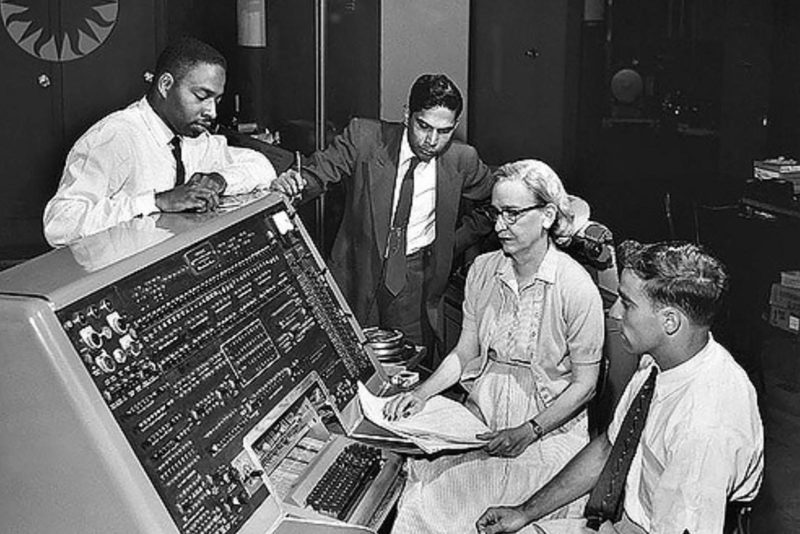

PROGRAMACIÓN E HISTORIA

El principio de la historia de la programación
El primer lenguaje de programación fue un algoritmo creado por Ada Lovelace en 1883. Ada Lovelace creó este algoritmo para el motor analítico de Charles Babbage. El propósito de este algoritmo era calcular los números de Bernoulli. En 1936, por primera vez, los códigos informáticos fueron especializados por Alonzo Church y Alan Turing. Church expresó el cálculo lambda de forma formulativa.
Lenguaje de ensamblaje
Los primeros ordenadores modernos (alimentados eléctricamente) fueron creados en los años 40. Estas computadoras estaban limitadas en velocidad y capacidad de memoria. Debido a estas limitaciones, los programadores se vieron obligados a escribir manualmente programas en lenguaje ensamblador. Siendo un lenguaje de programación de bajo nivel, era una tarea difícil programarlo manualmente. Los programadores se dieron cuenta entonces de la necesidad de lenguajes de alto nivel para disminuir el esfuerzo que se requería para escribir los programas en lenguaje ensamblador manualmente.


Los primeros lenguajes de programación
FORmulaTRANslation es el lenguaje de programación más antiguo y que continúa en uso. Creada por John Backus en 1957, esta herramienta fue desarrollada para la computación científica de alto nivel, matemáticas y estadísticas. A día de hoy, este lenguaje se sigue usando en la industria automovilística, aeroespacial, gubernamental y la investigación. Por ejemplo, es muy útil para el pronóstico de los servicios meteorológicos. En 1959 se desarrollo Cobol, que está detrás de la mayoría de los sistemas de transacciones de negocio de los procesos de las tarjetas de crédito, ATMs, telefonía, sistemas hospitalarios, gobierno, sistemas automatizados y señales de tráfico. El desarrollo de Cobol, creado por Grace Murray Hopper, muestra un lenguaje familiar y uniforme para transacciones empresariales. En 1964 se creo Basic, que fue diseñado como un lenguaje simplificado para aquellos que no tenían como base fuertes conocimientos técnicos o matemáticos. Entre 1969 y 1973 se crea C, a manos de Dennis Ritchie para los laboratorios Bell Telephone. En los laboratorios Bells, Bjarne Stroustrup modificó el lenguaje C al C++, creando lo que muchos consideran el lenguaje de programación más popular que ha existido nunca. Hoy en día es usado por Firefox, Office y Adobe PDF Reader. Esto dio el puntapié a que se sigan perfeccionando los lenguajes hasta llegar a los lenguajes de hoy en día.